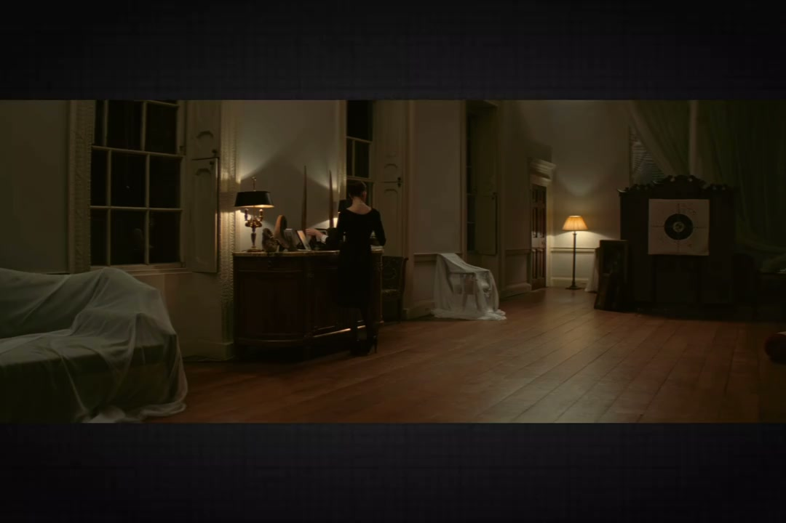
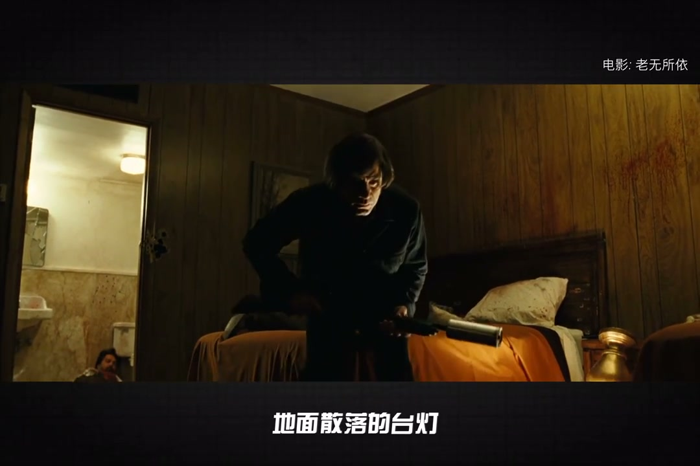
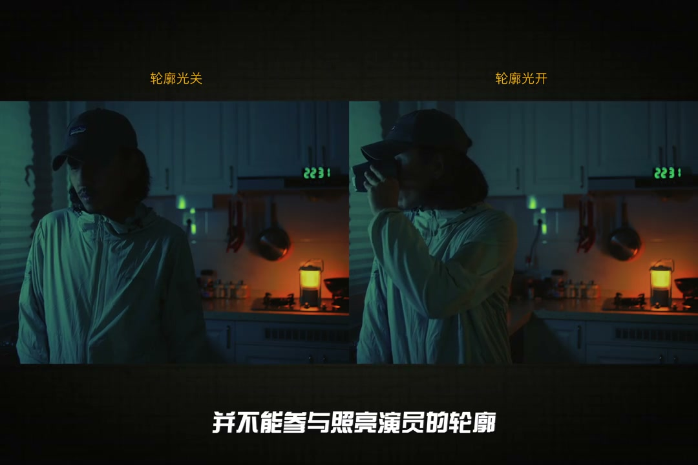
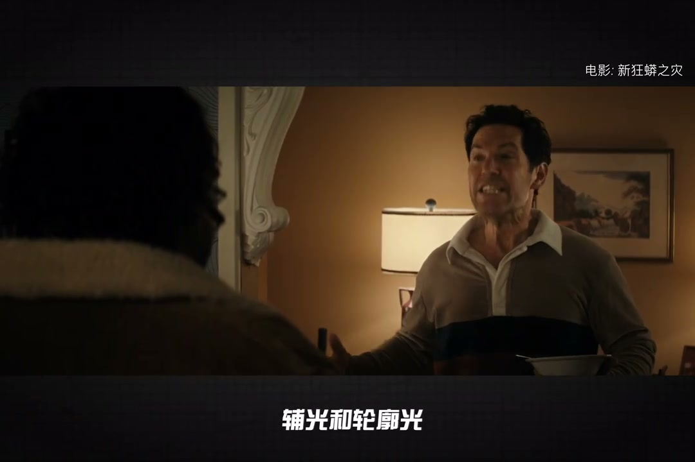
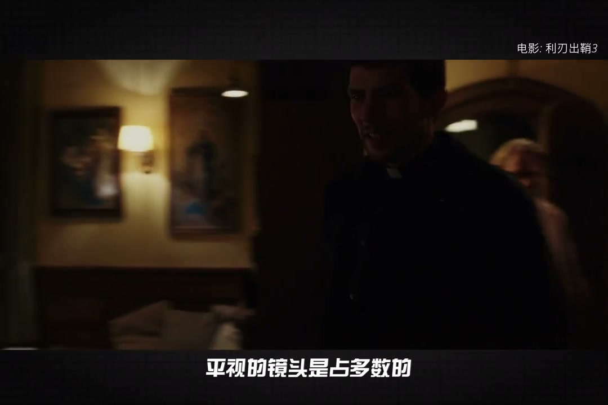

内容要点
[00:00] 一个 两个 三个 四个 五个 六个 七个
[00:06] 一个房间里真的需要这么多台灯吗
[00:09] 好吧 你可以说那是富人家庭
[00:11] 装修富力堂皇一点也没毛病
[00:13] 但你看普通人家庭里
[00:15] 杂业有这么多盏台灯
[00:17] OK 我们来聊聊为啥电影里到处都是台灯
[00:20] 他们究竟起到什么作用
[00:22] 龙统一点的回答
[00:23] 它是电影不光 作弊极的技巧
[00:25] 首先 台灯可以作为一个移动可控的光源
[00:29] 并且能合理出现在画面里
[00:31] 被称作石井光源
[00:33] 什么地方缺光 就放一盏台灯
[00:35] 给该区域的物件和人物补光
[00:37] 创造兴趣点
[00:39] 你看这个画面
[00:40] 地面散落的台灯
[00:41] 正是演员面部的主光来源
[00:44] 而斯坦利库布里克
[00:45] 把这技法推到了暴力美学的高度
[00:48] 在电影Barry Lyndon室内晚宴的场景里
[00:50] 拒绝放置人造光源
[00:52] 仅靠蜡烛作为主光
[00:54] 为了提高亮度
[00:55] 库布里克定做了特种蜡烛
[00:57] 竹星是一般蜡烛的三倍
[00:59] 导致燃烧速度也是三倍
[01:01] 同时定制了颗灯月同款的蔡司50毫米
[01:04] T10.7超大光圈镜头
[01:06] 才勉强未保当时ASA200的胶卷
[01:09] 创下电影史上
[01:10] 一次艺术与技术结合的状惠
[01:12] 但这并不是好莱坞中外台灯的全部原因
[01:15] 合理解释光从哪来
[01:17] 才是台灯的杀手剪
[01:18] 我们都熟知三点是曝光
[01:20] 它被运用到电影的每一个镜头里
[01:23] 但在一个场景里
[01:24] 它是否能成立
[01:25] 则需要逻辑的支撑
[01:27] 比如这个镜头
[01:28] 是一个典型的三点式
[01:29] 从画面我们可以分析到
[01:31] 主光从窗外来
[01:33] 辅光是空间里慢慢射回来的光
[01:35] 可惜轮廓光作为唯一的卵色光源
[01:38] 没能解释清楚
[01:39] 导致的结果就显得没那么自然
[01:42] 如果我们加入一盏台灯
[01:44] 这道轮廓光立马就合理了
[01:46] 大家看
[01:47] 虽然从它放置的角度
[01:48] 并不能参与照亮演员的轮廓
[01:50] 但对画面的帮助是显著的
[01:53] 这种未光标明来源的技法
[01:55] 叫做增添逻辑光源
[01:57] 那为何必须是台灯呢
[01:59] 其实也可以换成油烟机的灯
[02:01] 不影响它发挥作用
[02:03] 我们再来看一次场景的完整光位
[02:05] 这个是演员的轮廓光
[02:07] 用一面反光板给割开
[02:09] 避免污染到场景里
[02:10] 然后这个是轮廓的逻辑光源
[02:13] 窗外还有一盏灯
[02:14] 亮度只开到了1%
[02:17] 最后这个才是演员的面光
[02:20] 算上油烟机一共四盏灯
[02:22] 只要理解了它们的逻辑
[02:24] 其实很直观
[02:25] 逻辑光甚至不必是一个自发光源
[02:28] 它可以是被照亮的任何东西
[02:29] 回到刚刚的画面
[02:31] 从窗外打到窗帘上的光
[02:33] 其实也是一道逻辑光
[02:34] 因为它同样不参与演员面部的照明
[02:37] 作用是围照街道的光
[02:39] 为制造空穴来风的面光
[02:40] 提供逻辑支撑
[02:42] 同时也为整个场景铺了一层底子光
[02:45] 再举一个更显著的例子
[02:47] 这个画面里
[02:48] 没有一个直接为演员的发丝
[02:50] 和轮廓提供逻辑的光源
[02:52] 显然不是这盏灯
[02:53] 太远了
[02:54] 而且角度严重不符
[02:56] 所以这整个区域很关键
[02:58] 必须以被暖色的光照亮
[03:00] 才能暗示画外
[03:01] 还有一盏或者多盏光源
[03:03] 逻辑才能成立
[03:05] 由于电影是动态连续的
[03:07] 前后镜头只要出现过逻辑光源
[03:09] 这个光源会被观众记住
[03:11] 就算下一个画面角度
[03:12] 不能再带到光源
[03:14] 但逻辑依然通顺
[03:17] 真正让台灯大方一彩的原因
[03:19] 是它的高度
[03:20] 正好落在房间布高
[03:22] 也不低的中间位置
[03:24] 所以一个房间里不知多展台灯
[03:26] 无论拍摄机位怎么变动
[03:28] 都可以方便快捷的
[03:29] 为演员重新补上面光
[03:31] 浮光和轮廓光
[03:32] 并补破坏逻辑
[03:35] 逻辑光源需要出现在画面里
[03:37] 所以它们是很容易过报的
[03:39] 亮度调节的挡位需要非常精细
[03:42] 现在也有专门为台灯
[03:43] 设计的补光灯泡
[03:44] 被电影大量使用
[03:46] 像我手里这颗神流的NoLED-C7R
[03:49] 可以通过手机APP
[03:50] 无级调节亮度
[03:52] 甚至RGB变色
[03:54] 那么巨组能够灵活
[03:55] 实时掌控多个逻辑光源
[03:57] E27标准罗口设计
[03:59] 也能接入试电
[04:00] 不需要担心什么时候会没电
[04:03] 当然电影里平视的镜头
[04:05] 是占多数的
[04:06] 万一来个养世和腐蚀的构图
[04:08] 或者台灯完全不适用的时代背景
[04:10] 那就需要设计
[04:11] 其他形态的逻辑光源
[04:13] 所以电影里
[04:14] 我们看到星星点点的光源那么多
[04:17] 功能比如制造小光区
[04:19] 增加场景里的细节和反差
[04:21] 制造明暗明暗的三明治不光
[04:23] 种种效果能让画面有层次外
[04:26] 但拂起逻辑光源
[04:27] 更是它们不可或缺的使命
[04:30] 这就是电影里到处都是台灯的原因
[04:32] 感谢粉丝们的认识
[04:33] 我是老崔
[04:34] 我们下期再见




